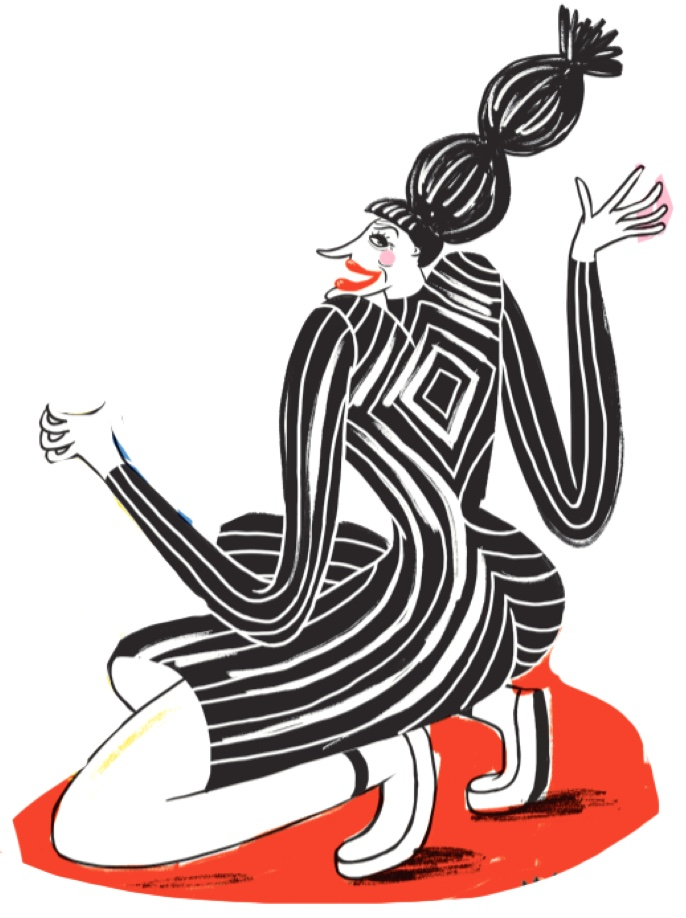

לרכישת הספר
מחיר: 98 ש״ח, משלוח בארץ: 12 ש״ח
קונצרטינה בכריכה קשה, 16.4*24 ס”מ (262.4 ס”מ במצב פתוח)
קנה עכשיו
הסיפור ”שמלות כלות” נדפס לראשונה בשנת 2002 בקובץ הסיפורים “הוםסנטר” (הוצאת ידיעות ספרים. הגרסה המאויירת הוצגה לראשונה במסגרת
התערוכה “חילופי דברים” של המחלקה לתקשורת חזותית בבצלאל - אירועי שבוע האיור ספטמבר 2015.
•
מהדורה ראשונה, 2017
© זכויות היוצרים וזכויות השימוש בטקסט שמורות לידיעות ספרים.
© זכויות היוצרים וזכויות השימוש באיורים שמורות לאיתן אלוא.
•
הפצה: מילתא חנות ספרים
| ניתן לרכוש גם בחנויות: מילתא, יעקב 36, רחובות | סיפור פשוט, שבזי 36, תל אביב | המגדלור, לבונטין 1, תל אביב | תולעת ספרים,
ככר רבין 9, תל אביב | תולעת ספרים, מזא״ה 7, תל אביב | חנות מוזיאון תל אביב לאמנות, שדרות שאול המלך 27, תל אביב | אסופה,
יהודה מרגוזה 8, יפו | חנות מוזיאון נחום גוטמן לאמנות, שמעון רוקח 21, תל אביב | אדרבא, שדרות בן מימון 5, ירושלים | ירדן
ספרים, יפו 42, ירושלים
הוצאה לאור: eitanel.com
לפרטים נוספים: eitan841@gmail.com
הספר ראה אור בסיוע מועצת הפיס לתרבות ולאמנות